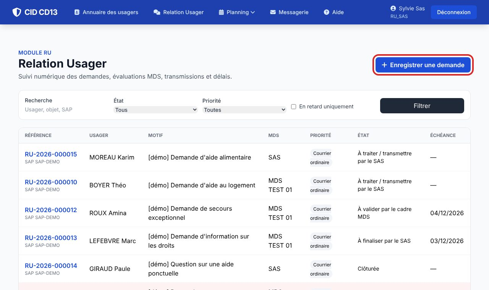
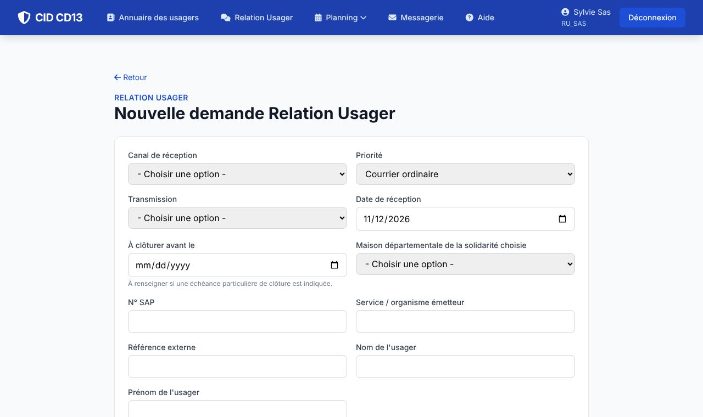
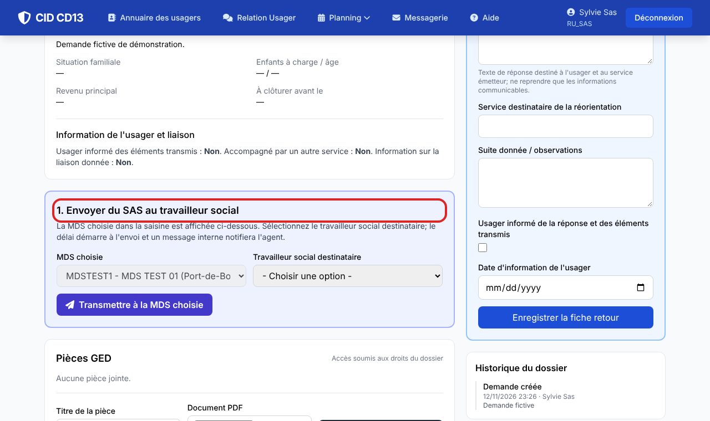

Avant de commencer
- La liste Relation Usager montre les demandes de votre périmètre : pour une MDS, seulement celles qui lui ont été transmises.
- Préparez le nom de l'usager, l'objet de la demande et la référence SAP si elle existe : ils servent à retrouver le dossier.
1Ouvrir le formulaire


- Depuis le menu Relation Usager, cliquez sur Enregistrer une demande.
- Renseignez le canal de réception, la date de réception, l'identité de l'usager, le motif et la demande, en ne gardant que les éléments utiles au traitement.
2Choisir le circuit
- Réponse directe ou réorientation par le SAS : le SAS répond ou oriente sans passer par une MDS. Vous rédigez alors la fiche retour au lieu de transmettre.
- Évaluation par une MDS : choisissez la MDS. La demande est enregistrée sans être transmise : le délai n'a pas encore commencé.
Une demande reçue directement par une MDS voit son délai partir de la date de réception, sans passer par le SAS.
3Transmettre au travailleur social

- Dans la fiche, la section 1. Envoyer du SAS au travailleur social affiche la MDS choisie.
- Sélectionnez le travailleur social destinataire, puis cliquez sur Transmettre à la MDS choisie.
- La date d'envoi est enregistrée, le délai démarre et l'agent reçoit un message interne qui renvoie à la demande, sans le récit de la situation.
Bon à savoir
- Le message interne contient la référence et un lien vers le dossier, jamais le récit de la demande.
- CID n'envoie rien automatiquement à l'usager ni au service émetteur : l'envoi externe reste à faire.
Et ensuite ?
Cliquez sur une image pour l'agrandir. Le cadre rouge montre où cliquer ou quoi remplir. Toutes les données affichées sont fictives.